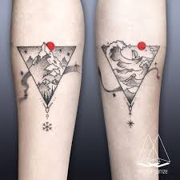
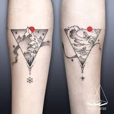

TATTOO LIFE - це сайт, що позволить вам пірнути в світ перманентного тату. Саме тут ви можете дізнатись про основні стилі татуїровок, загоєння шкіри, інструменти та спосіб їх нанесення.
Мистецтво наносити подрібнені сторонні хімічні елементи (барвники) супроводжувало людську цивілізацію з доісторичних часів. Татуювання було не тільки прикрасою, але і знаком племені, роду, соціальної приналежності. Стародавні люди також вважали, що магічна сила татуювання захистить їх від злих духів.
В наш час татуювання сформувалось в надзвичайно різноманітне мистецтво. Татуїровки мають свої символи в різних культурах, релігіях та народах, а кожен стиль володіє унікальними рисами, детальнішу інформацію ви можете прочитати на нашому сайті в розділі "стилі".
На TATTOO LIFE зберігається інформація на тему особливості стилів тутуїровки, необхідні для цього процеса інструменти та посилання на інтернет-магазини де ці інструменти та деякі інші предмети можна придбати. З запитаннями, відповіді до яких ви не знайшли на сайті, вам допоможуть на форумі.


 
